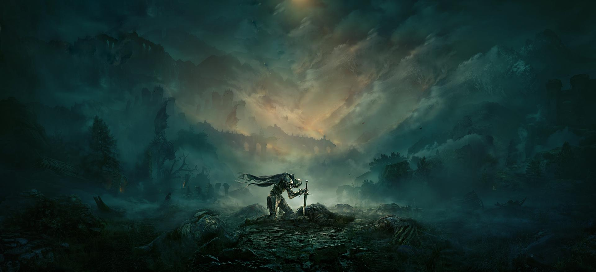
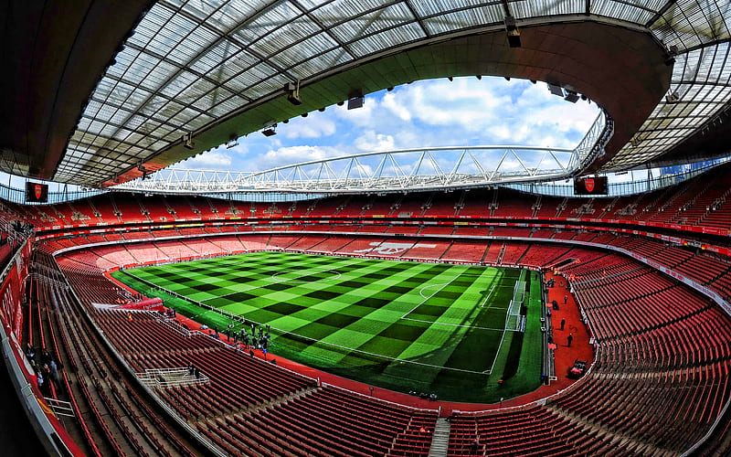
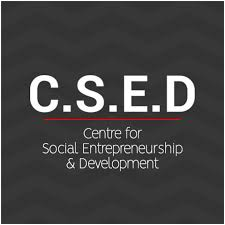
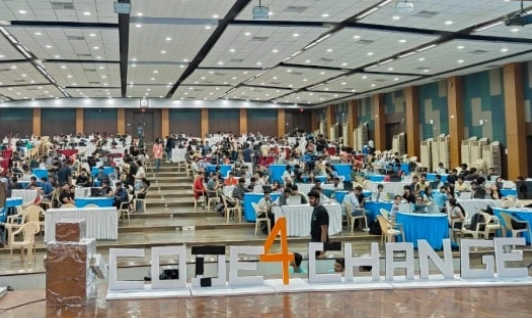

Movies and TV shows are some of my favorate interests, I perticularaly have a great love for media with an expansive universe and great writing such as Star wars, dune franchise, Game of Thrones and other such media |
|---|
Gaming has been one of my earliest hobbies from when i was 9 years old, ive played all types of games from online with my friends but in resent memory ive been more in offline story games with i truly enjoy like elden ring |
 |
|---|
Music is also a great interest of mine, while I may not have the expertise to play any music, i Deeply enjoy listening to different albums and genres and see as another way to express myself |
|---|
Football is one of my favorite activities, I enjoy watching and playing the game whenever I have the chance. I support arsenal fc in the premire leage soon to be premire leage winners. |
 |
|---|
Python |
C/C++ |
Problem Solving |


+91 9751536006